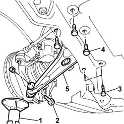

4410B40 LOWER TRACK CONTROL ARM (WITH BALLJOINT) FOR LEFT OR RIGHT FRONT SUSPENSION (ONE) - R+R - CHECK WHEEL GEOMETRY SEPARATELY
- Path
- Procedures > 44 SUSPENSION AND WHEELS > 4410 FRONT SUSPENSION > 4410B FRONT SUSPENSION TRACK CONTROL ARMS > 4410B40 LOWER TRACK CONTROL ARM (WITH BALLJOINT) FOR LEFT OR RIGHT FRONT SUSPENSION (ONE) - R+R - CHECK WHEEL GEOMETRY SEPARATELY
- Kind
- repair procedure (removal / refitting; the operation number is the code)
- Applies to
- all engines; all production periods
- Interactive page
- https://sloeber94.github.io/elrnDB-fUlss/en/#/179007374
Applies to: all engines; all production periods
 Removing
Removing
 Refitting
RefittingProceed as follows to remove the left lower track control arm.
. Position the vehicle on a lift.
See
Op. 4450B02 LEFT FRONT WHEEL - R.R
1. Position a hydraulic lift under the brake caliper supporting the suspension.
2. Undo the bolt fixing the track control arm to the wheel hub.
3. Undo the front bolts fixed to the suspension crossmember.
4. Undo the rear bolts fixed to the suspension crossmember.
Using the special tool, disconnect the track rod end from the wheel hub.
Description | Code | Function | |
|---|---|---|---|
. | Head extractor | Head extraction |
Adjust the hydraulic lift until the lower track control arm is released.
5. Remove the lower track control arm.

Applies to: all engines; all production periods
Proceed in the same way to remove the right lower track control arm.
Applies to: all engines; all production periods
Refitting
RemovingProceed as follows to refit the left lower track control arm.
Position the track control arm.
Screw in the bolts fixing it to the suspension crossmember without tightening them.
Connect the track rod end to the wheel hub.
Screw in the fixing bolt on the wheel hub without tightening it.
Remove the hydraulic lift.
See
Op. 4450B02 LEFT FRONT WHEEL - R.R
Position the vehicle on a lift.
1. Using the special tool, compress the front suspension so that height H1 (reference) measured between the bent edge and the ground is:
Applies for versions to 02/2004
Subject | Value | |
|---|---|---|
H1 | FRONT WHEEL GEOMETRY (With 205/65 R15 tyres) | mm 167+12/-10 |
Subject | Value | |
|---|---|---|
H1 | FRONT WHEEL GEOMETRY (With 215/65 R15 tyres) | mm 171+12/-10 |
Subject | Value | |
|---|---|---|
H1 | FRONT WHEEL GEOMETRY (With 215/60 R16 tyres) | mm 175+12/-10 |
Applies for versions from 2/2004
Subject | Value | |
|---|---|---|
H1 | FRONT WHEEL GEOMETRY (With 215/65 R15 tyres) | mm 171+12/-10 |
Subject | Value | |
|---|---|---|
H1 | FRONT WHEEL GEOMETRY (With 215/65 R16 tyres) | mm 175+12/-10 |
Applies to: all engines; all production periods
Tighten the fixing bolts on the suspension crossmember to the recommended torque.
Value daNm | Fastening | Component | dia | |
|---|---|---|---|---|
. | 7,0 | Bolt | LOWER FRONT TRACK CONTROL ARMS |
Tighten the fixing bolt on the wheel hub to the recommended torque.
Value daNm | Fastening | Component | dia | |
|---|---|---|---|---|
. | 7.0 | Bolt | LOWER FRONT TRACK CONTROL ARMS |
Description | Code | Function | |
|---|---|---|---|
. | Tool kit | Suspension pre-loading |
Remove the tool positioned previously.
Remove the vehicle from the lift.
See
Op. 4450A10 FRONT WHEEL GEOMETRY - CHECK USING OPTICAL EQUIPMENT - INCLUDES ADJUSTMENT IF NECESSARY
Proceed in the same way to refit the right lower track control arm.
Topics linked from this page (2)
- 4450A10 FRONT WHEEL GEOMETRY - CHECK USING OPTICAL EQUIPMENT - INCLUDES ADJUSTMENT IF NECESSARY
- 4450B02 LEFT FRONT WHEEL R R